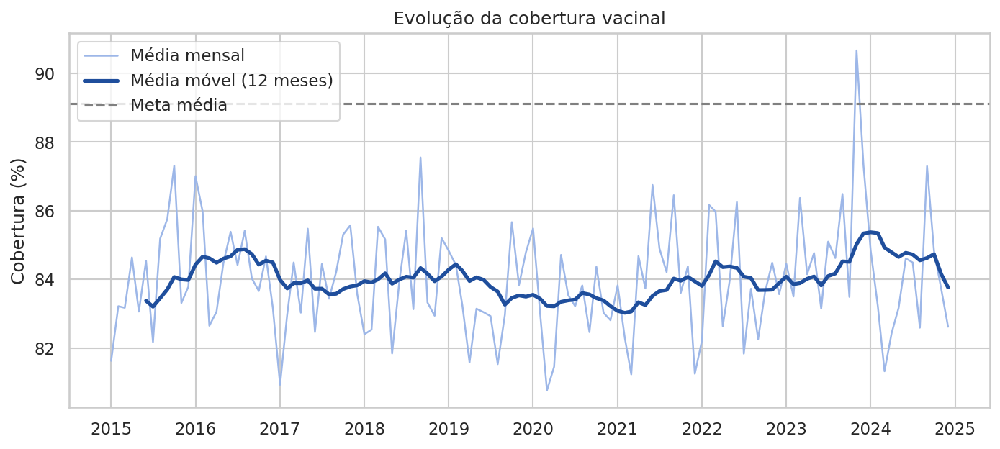
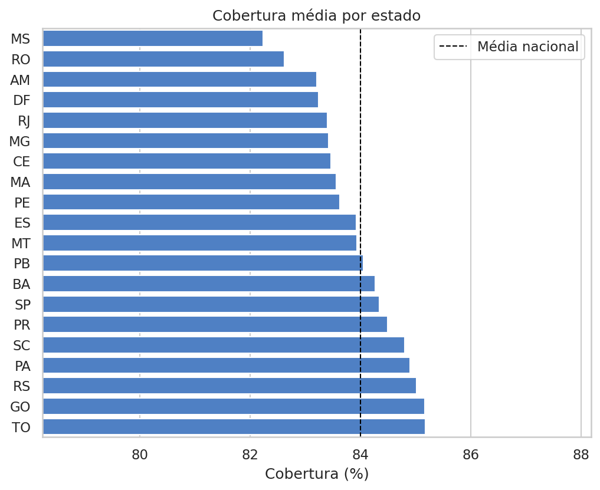
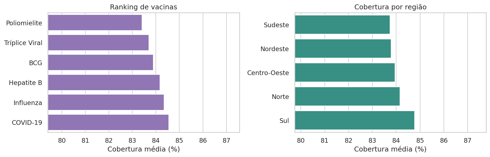
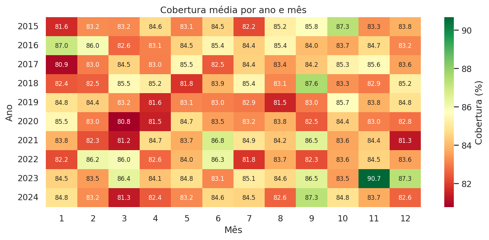
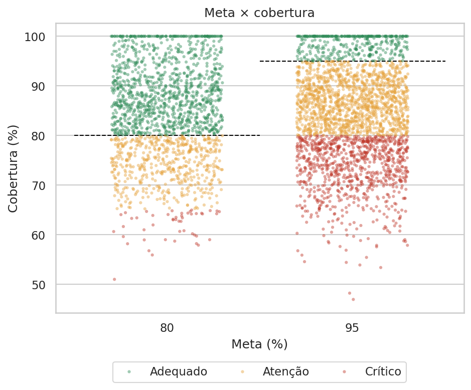
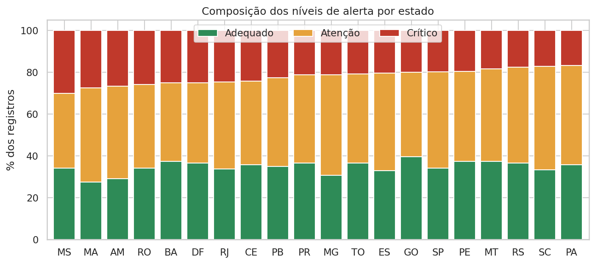
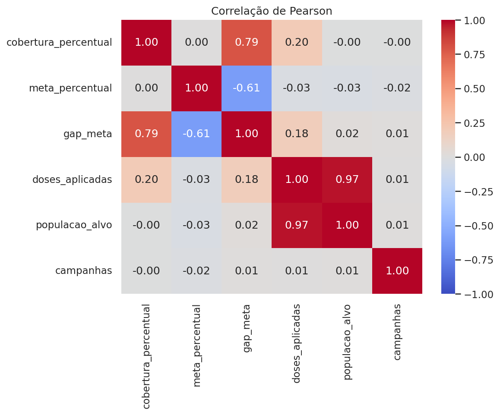

Sobre o projeto
O projeto investiga a cobertura de seis vacinas (Poliomielite, BCG, Influenza, Hepatite B, COVID-19 e Tríplice Viral) em 20 estados e 37 municípios, de 2015 a 2024, comparando cada registro com a meta de imunização (80% ou 95%).
Ele percorre o fluxo completo de um projeto analítico: tratamento dos dados, análise exploratória, indicadores, visualizações, persistência em banco SQLite, dashboard interativo e publicação na web.
Base simulada. Os dados foram fornecidos pelo professor para fins didáticos. Os resultados ilustram o método e não descrevem a situação real da vacinação no país.
Perguntas orientadoras
- Quais estados têm a menor cobertura vacinal?
- Houve queda da vacinação ao longo do tempo? Em quais períodos?
- Quais vacinas têm menor adesão e quais estão abaixo da meta?
- Existem regiões mais vulneráveis?
- Quais estados exigem maior atenção da saúde pública?
Indicadores analisados
Principais achados
Visualizações







Tecnologias utilizadas
Funcionalidades avançadas: persistência em banco (SQLAlchemy + SQLite, com modelagem relacional e JOIN), correlação estatística, séries temporais (média móvel e variação anual) e mapa interativo.
Arquivos do projeto
Dashboard interativo
O dashboard foi feito com Streamlit e permite explorar os dados com sete filtros (ano, mês, região, estado, vacina, público-alvo e nível de alerta), KPIs dinâmicos, gráficos, tabela dinâmica e conclusão executiva que se atualiza com os filtros.